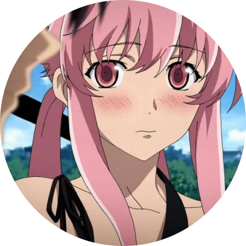

Добро пожаловать на сайт вики, по аниме дневник будущего!
Информация
Информация
Юкитэру Амано, ученик старшей школы, имеет проблемы с приобретением друзей. Он считает себя "наблюдателем", который записывает всё происходящее в свой телефонный дневник и ни с кем не общается. Вернее, почти ни с кем... Он общается со своими воображаемыми друзьями - Deus Ex Machina и Муру-Муру. Но когда Деус наделил телефон Юкитэру записывать будущее, стало ясно, что он вовсе не воображаемый, а самый настоящий. И всё было бы ничего, но Деус сделал это не просто так. Это всё оказалось частью игры, игры на выживание. Юкитэру и ещё 11 случайных человек получили дневники будущего и были вынуждены участвовать в игре за право стать преемником Деуса. Правила игры просты: убей владельца дневника прежде, чем он убьёт тебя. Никаких исключений - будь то твой враг или друг. Победитель должен быть один. Кто же станет им? Об этом и повествует данное аниме.
"Мне нравится убивать, ведь я знаю, что меня никто не остановит" - Юно Гасай
"Даже у меня есть друзья. Правда, существуют они лишь в моём воображении." - Юкитэру Амано"Победитель всегда прав. Кто проиграл, тот и зло." - Ёмоцу Хирасака"Это же хорошо. Если сегодня худший день, значит дальше будет только лучше." - Маруко Икусаба"Я не псих, я защитник справедливости!" - Ёмоцу Хирасака"Я бы хотела сделать тебе так же больно, как ты сделал мне, но я никогда не смогу быть такой жестокой." - Минэнэ Урю"Стать богами... и вечно быть вместе... у нас, видимо, не получилось. Но, знаешь, это тоже вечность." - Маруко Икусаба